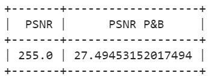

Laboratório 05 - Codificação de Imagem com DWT
Resultados integrante Randre
I. Resultados para o arquivo original
a) Codificação de Luminância (P&B) com DWT
b) Cálculo do Erro Quadrático Médio (MSE) e da Relação Sinal Ruído de Pico (PSNR)
c) Teste das Funções de Multiresolução wavedec2() e waverec2()
d) "Montagem" com wavedec2() e wavedecn()
e) Reconstrução de Imagem Colorida
I. Plano Vermelho
II. Plano Verde
III. Plano Azul

f) Reconstrução Nível 1 Colorida
g) Reconstrução da Imagem colorida e Cálculo da MSE de cada plano de cor e da PSNR total
- MSE Plano Vermelho: 1,51 x 10^-24
- MSE Plano Verde: 2,31 x 10^-24
- MSE Plano Azul: 1,5 x 10^-24

Variando nível e os componentes da reconstrução DWT
II. Resultados removendo o coeficiente CD
a) Cálculo do Erro Quadrático Médio (MSE) e da Relação Sinal Ruído de Pico (PSNR)
b) Reconstrução de Imagem Colorida, sem o coeficiente CD.
I. Plano Vermelho
II. Plano Verde
III. Plano Azul
c) Reconstrução da Imagem colorida e Cálculo da MSE de cada plano de cor e da PSNR total
- MSE Plano Vermelho: 2,80 x 10^4
- MSE Plano Verde: 2,41 x 10^3
- MSE Plano Azul: 5,25 x 10^6
IIi. Resultados removendo os coeficientes CD e CV
a) Cálculo do Erro Quadrático Médio (MSE) e da Relação Sinal Ruído de Pico (PSNR)

b) Reconstrução de Imagem Colorida, sem o coeficiente CD e CV.
I. Plano Vermelho
II. Plano Verde
III. Plano Azul
c) Reconstrução da Imagem colorida e Cálculo da MSE de cada plano de cor e da PSNR total
- MSE Plano Vermelho: 2,83 x 10^6
- MSE Plano Verde: 2,41 x 10^3
- MSE Plano Azul: 5,25 x 10^6
III. Resultados removendo os coeficientes CD, CV e CH
a) Cálculo do Erro Quadrático Médio (MSE) e da Relação Sinal Ruído de Pico (PSNR)
b) Reconstrução de Imagem Colorida, sem os coeficientes CD, CH e CV.
I. Plano Vermelho
II. Plano Verde
III. Plano Azul
c) Reconstrução da Imagem colorida e Cálculo da MSE de cada plano de cor e da PSNR total
Tabelas Comparativas:
Compressão de Imagens (SEM CD):

PSNR (SEM CD):
Compressão de Imagens (SEM CD e CV):

PSNR (SEM CD e CV):

Compressão de Imagens (SEM CD, CV e CH) :
PSNR sem CD, CV e CH
Notebook Python
Link para o notebook google collab - Sem CD: Notebook Ana
Link para o notebook google collab - Sem CD, CV: Notebook Luisa
Link para o notebook google collab - Sem CD, CV e CH: Notebook Randre